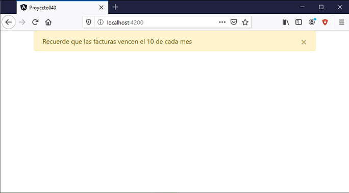

Crear una componente llamada AlertaComponent y cuyo selector debe llamarse 'boot-alerta'.
Mediante dos propiedades se deben poder cargar el color y el mensaje que muestra el cuadro de alerta.
Los colores pueden ser alguno de los valores clásicos propuestos por Bootstrap (alert-primary, alert-secondary, alert-success, alert-danger, alert-warning, alert-info, alert-light, alert-dark, alert-white)
Probar la componente creada desde la componente principal de la aplicación.
Crearemos primero el proyecto
ng new proyecto040
Instalamos el Bootstrap original con alguna de las tres formas vistas en conceptos anteriores, mediante CDN o localizandolo en la capeta 'assets' o mediante npm.
Crearemos la componente de alerta e indicamos como prefijo para la nueva etiqueta la cadena 'boot' (la idea es recordarnos que esta componente utiliza la librería de Bootstrap):
ng generate component alerta --prefix boot
Modificamos el archivo 'alerta.component.ts':
import { Component, OnInit, Input } from '@angular/core';
@Component({
selector: 'boot-alerta',
templateUrl: './alerta.component.html',
styleUrls: ['./alerta.component.css']
})
export class AlertaComponent implements OnInit {
@Input() color!: string;
@Input() mensaje!: string;
constructor() { }
ngOnInit(): void {
}
}
Definimos las dos propiedades que se inicializan con el color y el mensaje que debe mostrar la componente:
@Input() color!: string; @Input() mensaje!: string;
Modificamos el archivo 'alerta.component.html':
<div class="alert {{color}} alert-dismissible fade show" role="alert">
{{mensaje}}
<button type="button" class="close" data-dismiss="alert" aria-label="Close">
<span aria-hidden="true">×</span>
</button>
</div>
Utilizamos clases propias de Bootstrap para definir el color
<div class="alert {{color}} alert-dismissible fade show" role="alert">
Por otro lado mediante interpolación se muestra el contenido de la propiedad 'mensaje'.
Ahora nos queda consumir la componente 'boot-alerta', esto lo haremos desde la componente principal de nuestra aplicación Angular.
Modificamos el archivo 'app.component.html':
<div class="container"> <boot-alerta mensaje="Recuerde que las facturas vencen el 10 de cada mes" color="alert-warning"></boot-alerta> </div>
El archivo 'appcomponent.component.ts' queda sin modificaciones.
Ahora ejecutemos la aplicación:
ng serve -o
Tenemos como resultado:
Podemos probar esta aplicación en la web aquí.